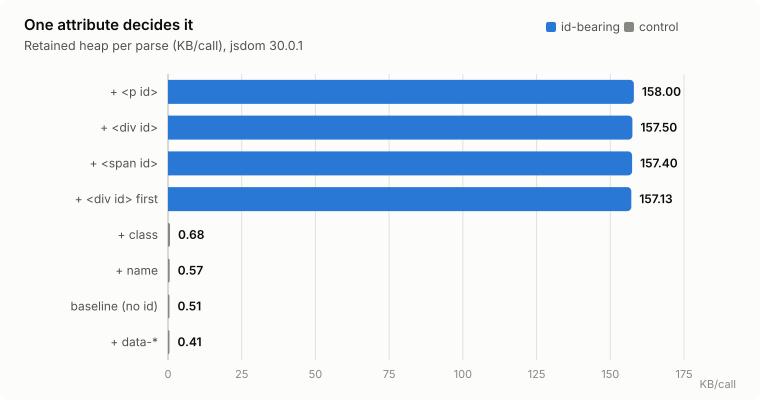
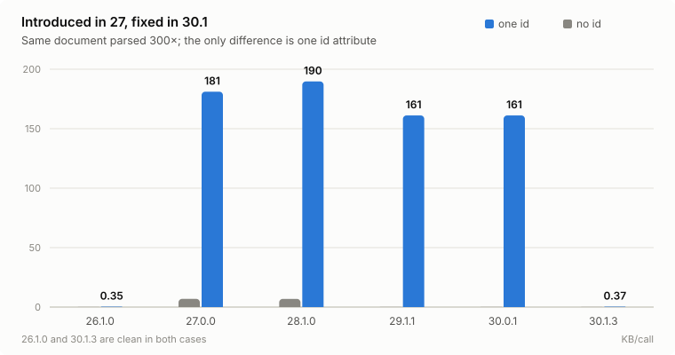
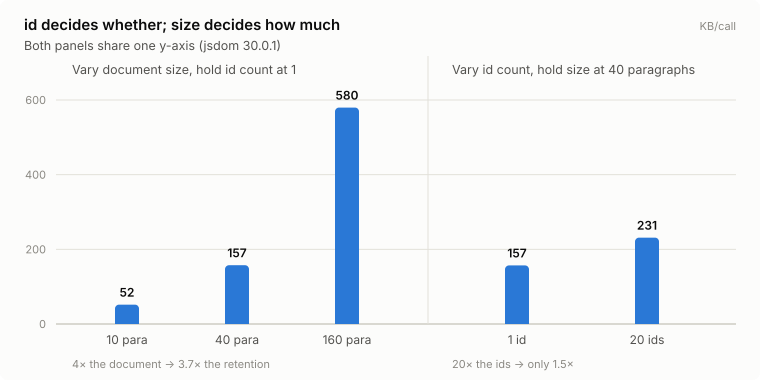
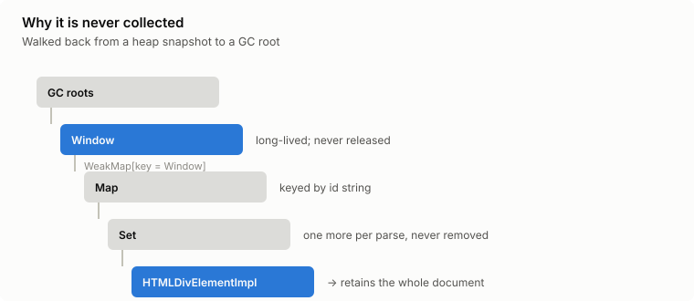

| KB/call | |
|---|---|
| + <p id> | 158.00 |
| + <div id> | 157.50 |
| + <span id> | 157.40 |
| 157.13 | |
| + class | 0.68 |
| + name | 0.57 |
| 0.51 | |
| + data-* | 0.41 |

| jsdom | ||
|---|---|---|
| 26.1.0 | 0.11 | 0.35 |
| 27.0.0 | 6.90 | 181.09 |
| 28.1.0 | 6.88 | 189.73 |
| 29.1.1 | 0.11 | 161.14 |
| 30.0.1 | 0.11 | 161.14 |

| KB/call | |
|---|---|
| 51.83 | |
| 157.47 | |
| 579.68 | |
| 231.31 |
